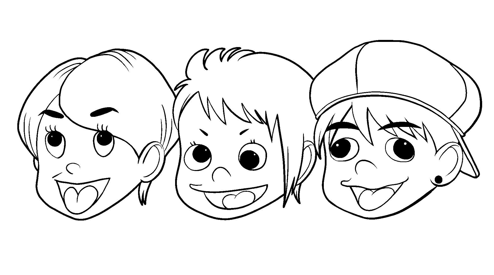

株式会社川本石材商会
川本洋司 様／川本こず江 様

このたびは、しそチャンNETのクラウドファンディングにご支援いただき、誠にありがとうございました。
ご支援のお礼として、御社をご紹介する30分の特別番組を制作いたします。撮影の内容と当日の流れをまとめましたので、ご確認をお願いいたします。
出演者は、国道29号を南から歩いて御社へ伺います。後半は社長にご案内いただき、御社から伊和神社へ歩いて向かいます。安富町の工事現場は午前に撮影し、番組の中でつなぎます。
番組で放送する順番です。撮影はこの順番ではありません（当日の流れは下の表）。現場の様子に合わせて、内容が変わることがあります。
撮影は、合わせて4時間ほどを予定しています。社長にはほぼ全体にご出演いただく形になります。ご都合の悪い時間があれば、お知らせください。
| 1 | 安富町の工事現場 | 午前（昼前）に伺ってもよろしいでしょうか。現場の場所と時間、墓地での撮影に許可が必要かどうかを教えてください。現場では、施工をされているスタッフの方にお話を伺えればと思います。社長にもお越しいただけるようでしたら、ぜひお願いいたします。 |
| 2 | レーザー刻印 | 先日お送りしたキャラクターの図案データ（3種類）で刻んでいただければと思います。刻む石の種類・大きさ、かかる時間、データで不都合があれば教えてください。 |
| 3 | 視聴者プレゼント | 刻んでいただいた石（1個）を、番組の視聴者プレゼントにさせていただいてもよろしいでしょうか。しそチャンNETのInstagramをフォローしてDMを送ってくださった方の中から、抽選でお贈りする予定です。 |
| 4 | 石当てクイズ | 石のサンプルを3種類ほどご用意いただけますでしょうか。石の名前は、当日の打ち合わせで伺います。 |
| 5 | 石のフクロウ | ふるさと納税での寄附の額や、申し込めるサイトなど、番組でご紹介してよい内容を教えてください。 |
| 6 | 古いお写真 | お店の外観を写した古いお写真（昭和・大正・明治など、いつのものでも）があれば、番組で使わせていただきたいので、お借りできますでしょうか。太鼓橋を施工された時期や、そのときのお写真もあれば拝見させてください。 |
| 7 | 番組でのご紹介 | 番組で触れてほしくないことがあれば教えてください。 |
先日お送りしたデータ（PNG 2000px・4000px、SVG）の図案です。
ご不明な点や、ご都合の悪いことがあれば、いつでもお気軽にご連絡ください。どうぞよろしくお願いいたします。